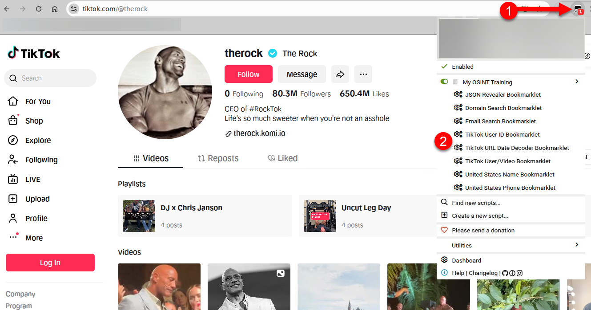
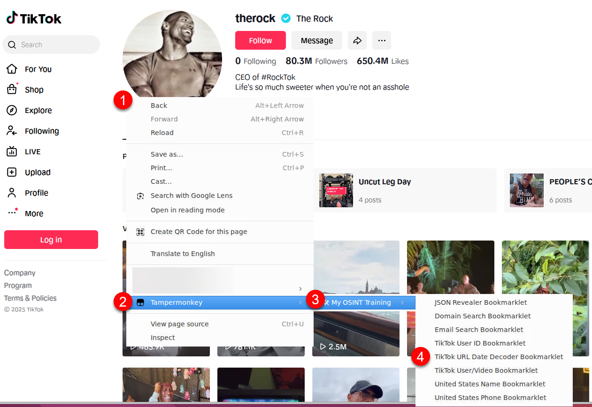

Tampermonkey OSINT Bookmarklets Guide
Optional Enhancement: Using the Tampermonkey extension/add-on is a more advanced method of using the bookmarklets and is 100% OPTIONAL. It takes a little setup and some trust but does make it easy to use and update the bookmarklets. Choose your own adventure here....use or do not. You decide.
What is Tampermonkey?
Tampermonkey is a cross-browser extension that lets you create custom browser modifications using JavaScript. Think of it as building browser extensions without the complexity. Tampermonkey handles the technical setup while you focus on the functionality.
WARNING: Browser extensions can be awesome, but they can also be malicious. Some extensions can read (and alter) all requests your browser makes, take screenshots, and transmit that data to someone else without you knowing about it. As an example, recently, an extension that provided a "Free VPN" service was discovered to secretly screenshot all pages users visited and send those images to the creator. That's seriously bad.
We do our best to ensure that bookmarklets hosted on My OSINT Training do nothing malicious. We review all code and have several AIs also review code submitted by third parties to ensure that you can trust our tools. But please do not just take our word for it, do your own analyses of our bookmarklets to make sure you are comfortable with them.
Installation of Tampermonkey
1. Install Tampermonkey Extension
- Download from your browser's extension store
- For Chromium browsers: You must do an additional step of enabling Developer Mode in the browser (the extension will tell you how)
- For Brave: You must do an additional step: Go to Extensions → Tampermonkey Details → Enable "Allow User Scripts"
2. Add the Userscript
Choose one of these methods:
Method 1: Manual Installation
NOTE: By using this method, you will periodically need to check for updates in the bookmarklets manually and then update the content in your browser. No auto-updating happens with this method.
- Open Tampermonkey and click the '+' symbol
- Delete the boilerplate code
- Copy/paste content from userscript.js
- Save the script
Method 2: Auto-Update Installation
WARNING: This method automatically will update your tools as we update our tools; keeping your browser in sync. It also could be a security risk if you do not trust our tools and review process.
- Right click on this link and "Copy Link Address": userscript.js
- In Tampermonkey, launch the Dashboard
- Then navigate to the Utilities tab
- Paste the URL from your clipboard into the "Import from URL" field
- Click "Install"
- The "Userscript Install" page should pop up and you should click the "Install" button
Usage
Once installed, access bookmarklets by Right-clicking on any webpage to see context menu options like in the image below.

Or you can click the Tampermonkey extension icon for "less-quick" access. The scripts will automatically show relevant bookmarklets based on the current website domain like in the image below.
